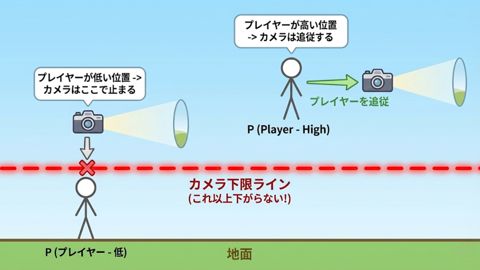

DimensionFlip
2D視点と3D視点を切り替えて進むアクションゲーム

gif.1 タイトル画面
目次
1.プロフィール
-
氏名:
山口 隼（ヤマグチ ハヤト）
-
所属:
河原電子ビジネス専門学校 ゲームクリエイター科 27卒
-
希望職種:
プログラマ
-
強み:
C++を用いたゲーム制作において、カメラ制御・状態管理・敵生成処理などを設計し、ゲームの仕組みを実装することを強みとしています。
本作品では、2D視点と3D視点を切り替えるゲーム性を成立させるため、カメラ制御、ステージ進行、敵生成、プレイヤー制御を中心に実装しました。
-
Email:
CA01244029@st.kawahara.ac.jp
2.作品概要
-
作品名:
DimensionFlip
-
ジャンル:
2D / 3D視点切り替えアクションゲーム
-
使用言語:
C++
-
開発環境:
Visual Studio 2022
学内エンジン
-
開発ツール:
GitHub
Fork
-
対応環境:
Windows 11
-
推奨操作:
Xbox系コントローラー
-
キーボード操作:
対応
-
プレイ人数:
1人
-
開発期間:
2025年9月 〜 現在進行中
3.制作形式と担当箇所
3-1.制作形式
-
個人制作
企画、実装、ステージ構成、カメラ制御、敵生成、ポートフォリオ作成を担当しました。
3-2.担当箇所
-
2D / 3D視点切り替えシステムの実装
-
カメラ制御の設計・実装
-
視点切り替え許可エリアの管理
-
ステージ進行管理
-
プレイヤー制御
-
敵キャラクターの生成処理
-
ステージごとの遷移処理
-
UI・操作説明・ポートフォリオ整理
4.ゲームの特徴
4-1.作品の核
DimensionFlipは、2D視点と3D視点を切り替えながらステージを進むアクションゲームです。
2D視点では横スクロールに近い感覚で進行し、3D視点では奥行き方向への移動や回り込みが可能になります。
本作品では、視点切り替えを単なるカメラ演出ではなく、移動ルートの発見・障害物の突破・敵回避に使うゲーム性として実装しました。

gif.2 2D / 3D視点切り替えを使ったステージ進行
4-2.2D / 3D視点切り替えによる攻略
2D視点では、奥行き方向の情報が制限されるため、ステージを横方向に進むアクションとして見せています。
一方で、3D視点に切り替えることで、2D視点では分かりにくい奥行き方向のルートや回避経路を確認できます。
想定している攻略体験は以下の通りです。
-
2D視点では進みにくい場所を、3D視点で回り込む
-
3D視点で地形の位置関係を確認し、2D視点でジャンプアクションを行う
-
敵や障害物に対して、視点を切り替えて安全なルートを探す
4-3.ステージ構成
本作品には、TutorialStage、NormalStage、BossStageの3種類のステージがあります。
-
TutorialStage:
基本操作とゲーム全体の流れを確認できます。
-
NormalStage:
2D / 3D視点切り替えを使ったステージ攻略を確認できます。
-
BossStage:
視点切り替えと戦闘を組み合わせた場面を確認できます。
5.操作方法
5-1.基本操作

本作品はXbox系コントローラーでのプレイを推奨しています。
キーボード操作にも対応していますが、操作感はコントローラー基準で調整しています。
5-2.推奨確認ルート
初見で確認する場合は、以下の順番で見ると作品の特徴が伝わりやすくなります。
-
タイトル画面で GameStart を選択
-
ステージ選択画面へ進む
-
NormalStageを選択
-
2D / 3D視点切り替えを使ってステージを進行
-
視点切り替えによる移動ルートやギミック突破を確認
-
余裕があればTutorialStageとBossStageも確認
企業提出時は、最初にNormalStageを見てもらうことで、2D / 3D視点切り替えのゲーム性が伝わりやすくなります。
6.ゲーム進行とステージ紹介
6-1.タイトルからステージ選択まで
video.1 タイトル画面からステージ選択まで
タイトル画面では、GameStart、Manual、GameEndを選択できます。
GameStartを選択するとステージ選択画面に進み、プレイしたいステージを選択できます。
Manualでは操作方法を確認でき、GameEndではゲームを終了できます。
6-2.TutorialStage
video.2 TutorialStage
TutorialStageでは、移動、ジャンプ、視点切り替えなど、ゲーム全体の基本操作を確認できます。
初めてプレイする場合でも、ゲームの流れを理解しやすいステージとして配置しています。
6-3.NormalStage

NormalStageでは、2D / 3D視点切り替えを使いながらステージを進みます。
敵やギミックが配置されているため、どのタイミングで視点を切り替えるかが重要になります。
本作品の核となる「視点切り替えによる攻略」を最も確認しやすいステージです。
6-4.BossStage

gif.3 ボス登場カットイン
BossStageでは、カメラを切り替えながら攻撃を避け、ボスに攻撃を与えます。
通常ステージとは異なるカメラ制御を行い、視点切り替えと戦闘を組み合わせた体験を目指しています。
7.技術的工夫点
7-1.カメラ制御の設計

■ 課題
2D視点と3D視点では、カメラに求められる役割が異なります。
2D視点ではステージ全体の見通し、3D視点では奥行き方向の移動確認が必要になります。
これらを1つの処理としてまとめると、条件分岐が増え、カメラクラスが肥大化する問題がありました。
■ どう工夫したか
カメラ本体を画面中央に配置し、プレイヤーが追従ラインを上下した分だけカメラが追従するようにしました。
また、斜面の移動にも対応し、プレイヤーの高さ変化に合わせて視点が追従するように調整しました。
■ 結果
ステージ全体の視認性を確保しつつ、プレイヤーの進行に合わせて自然にカメラを動かせるようになりました。
7-2.Strategy Patternによるカメラ処理の分離
作品内での使用箇所:
2D / 3Dカメラの切り替えロジック
■ 課題
当初はカメラクラスに2D視点、3D視点、ボス戦用カメラなどの処理を直接実装していました。
そのため、機能を追加するほど条件分岐が増え、処理の見通しが悪くなる問題がありました。
■ どう工夫したか
Strategy Patternを用いて、カメラの振る舞いを状況ごとに分離しました。
2D視点、3D視点、ボス戦など、状況に応じたカメラ制御を差し替えられる構成にしました。
■ 結果
カメラクラスの肥大化を防ぎ、視点ごとの処理を個別に修正しやすくなりました。
また、ボス戦専用カメラなどを追加する際も、既存の2D / 3Dカメラ処理への影響を抑えられるようになりました。
7-3.Factory Patternによる敵生成処理の整理
作品内での使用箇所:
敵キャラクターの生成方式
■ 課題
敵の種類が増えるたびにステージクラス内のswitch文が増え、ステージクラスの責務が大きくなっていました。
また、敵ごとの初期化処理がステージ側に増えることで、コードの見通しが悪くなる問題がありました。
■ どう工夫したか
Factory Patternを用いて、敵の生成責務をFactoryクラスに分離しました。
ステージ側では、敵の種類と生成座標を指定するだけで生成できるようにしました。
■ 結果
ステージクラスが敵の詳細な生成処理を持たなくなり、ステージ側の処理を整理できました。
敵の種類を追加する際も、修正箇所を限定しやすくなりました。
7-4.State Patternによる状態管理
作品内での使用箇所:
Playerクラス / Enemyクラス
■ 課題
PlayerやEnemyは、移動、ジャンプ、攻撃、被弾など複数の状態を持ちます。
これらを1つのクラス内で条件分岐だけで管理すると、処理が複雑になり、修正時の影響範囲が広くなります。
■ どう工夫したか
State Patternを用いて、状態ごとの振る舞いを分離しました。
PlayerとEnemyの状態をそれぞれ管理し、状態ごとに処理を切り替えられる構成にしました。
■ 結果
状態ごとの処理を確認しやすくなり、デバッグや機能追加を行いやすくなりました。
7-5.Singleton Patternによる管理クラスの統一
作品内での使用箇所:
SceneManager / StageManager などの管理クラス
■ 課題
シーン管理やステージ管理など、複数のクラスから参照される処理があります。
呼び出し方が統一されていないと、処理の流れが分かりにくくなります。
■ どう工夫したか
SceneManagerやStageManagerなどの管理クラスにSingleton Patternを使用し、アクセス方法を統一しました。
■ 結果
シーン遷移やステージ管理を複数のクラスから呼び出しやすくなり、ゲーム全体の管理処理を整理できました。
8.提出・確認情報
-
起動方法:
Game.exe を起動してください。
-
推奨環境:
Windows 11
Xbox系コントローラー推奨
キーボード操作対応
-
確認してほしいステージ:
最初にNormalStageを確認してください。
理由は、2D / 3D視点切り替えを使った攻略要素が最も伝わりやすいためです。
-
既知の不具合:
提出時点で把握している進行不能の既知不具合はありません。
9.今後の展望
-
2D / 3D視点切り替えギミックの強化
現状の視点切り替え要素を、さらにステージ攻略へ結びつける予定です。
2D視点では進めない場所を3D視点で回り込む、3D視点で位置関係を確認して2D視点でアクションするなど、視点切り替えを使う理由をより明確にします。
-
BossStageの改修
ボス戦では、視点切り替えによって回避ルートや攻撃チャンスが変化するように調整し、通常ステージの要素とより強く結びつけます。
-
提出物の整理
企業提出時に確認しやすいよう、実行ファイル、README、ポートフォリオ、動画リンクを整理した提出フォルダを作成します。
10.リンク集
-
YouTube:
-
GitHub:
-
Portfolio:
-
ROM:
-
過去作品（チーム制作）:
宛先
学校法人河原学園 河原電子ビジネス専門学校 ゲームクリエイター科 ゲームコース 3年制
2年 山口 隼
-
学内アドレス:
CA01244029@st.kawahara.ac.jp